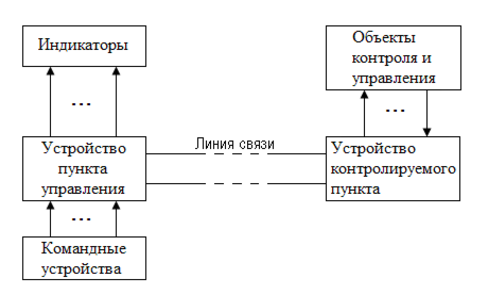
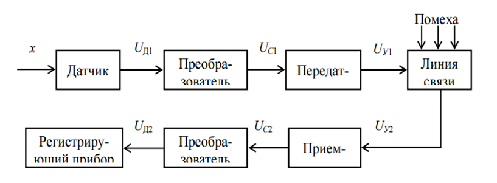
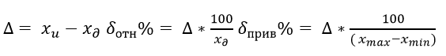
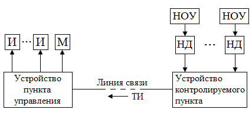
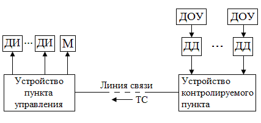
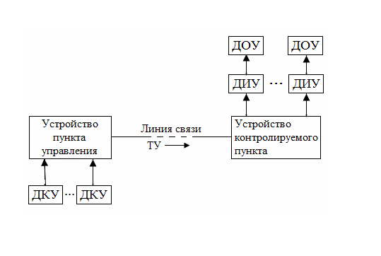

Основные понятия, методы телемеханики
Телемеханика – отрасль науки и техники, охватывающая теорию и технические средства контроля и управления объектами на расстоянии с применением специальных преобразователей сигналов для эффективного использования каналов связи. В телемеханике передача информации осуществляется без непосредственного участия человека, человек-оператор находится в пункте управления, где принимает информацию о состоянии контролируемых объектов, а также может вырабатывать команды управления. Однако в некоторых областях применения телемеханики (медицина, космос, спорт и т.п.) человек находится на обеих сторонах передачи, но на одной из сторон он является объектом контроля. Пример структурной схемы системы телемеханики представлен на рис.1.

Как видно из рисунка, основными составляющими системы телемеханики (СТМ) являются устройство пункта управления, линии связи и устройство контролируемого пункта.
В телемеханике широко используются следующие понятия:
- Контролируемый телемеханический пункт (КП) – место размещения объектов, контролируемых или управляемых средствами телемеханики.
- Телемеханический пункт управления (ПУ) – это место, с которого осуществляется управление или контроль состояния объектов, расположенных на контролируемом пункте. При частичной автоматизации в пункте управления находится диспетчер.
- Устройство телемеханики – совокупность технических средств телемеханики, расположенных на телемеханическом пункте управления или контролируемом телемеханическом пункте.
- Комплекс устройств телемеханики – совокупность устройств пунктов управления и контролируемых пунктов, предназначенных для совместного применения в телемеханических системах.
- Телемеханическая система – совокупность устройств пунктов управления и контролируемых пунктов, периферийного оборудования, необходимых линий и каналов связи, предназначенных для совместного выполнения телемеханических функций.
- Объект телемеханики – это технологический процесс, техническое устройство, состояние которого контролируется или управляется средствами телемеханики. Объекты бывают:
А) Непрерывные объекты, в которых процессы протекают непрерывно и выходная величина является непрерывной. Например, расход продукта в продуктопроводе, величина пластового давления в скважине, уровень нефтепродукта в ёмкости и другие.
Б)Дискретные объекты, в которых процессы протекают дискретно и выходная величина является дискретной. Например, положение путевой железнодорожной стрелки, состояние «включено – выключено» масляного электрического выключателя и другие.
В) Дискретно-непрерывные объекты, в которых в пределах дискретного состояния технологические процессы протекают непрерывно. Например, электрический двигатель в состояниях «включено – выключено» характеризуется дискретными состояниями, а развиваемая им скорость в состоянии «включено» представляет собой непрерывную составляющую.
Г) Сосредоточенные объекты, располагающиеся на небольшом расстоянии или площади, например, промышленное предприятие нефтехимического или машиностроительного производства;
Д) Распределённые объекты, располагающиеся на больших площадях или расстояниях, например, нефтяное или газовое месторождение, ирригационные системы, сети передачи электрической энергии и другие.
Телеизмерение (ТИ) – получение информации о значениях измеряемых параметров контролируемых и управляемых объектов методами и средствами телемеханики (ГОСТ 26.005-82). Таким образом, телеизмерение определяется как область автоматических измерений на расстоянии через каналы связи без непосредственного участия человека в процессе измерения. ТИ как область техники и технических наук одновременно является частью измерительной техники и телемеханики. В связи с этим в ТИ развиваются и применяются одновременно методы и технические средства измерений и телемеханика.
Телеизмерение отличается от обычных электрических измерений, которые не могут быть применены для измерения на расстоянии вследствие возникновения погрешностей из-за изменения параметров линии связи, окружающей среды и действия помех. Даже если бы указанные погрешности находились в допустимых пределах, передача большого числа показаний потребовала бы большого числа проводов. Кроме того, в некоторых случаях (передача измерения с подвижных объектов – самолетов, спутников, ракет и др.) обычные методы принципиально не могут быть использованы. Методы телеизмерения позволяют уменьшить погрешность при передаче измеряемых величин на большие расстояния, а также многократно использовать линию связи.
Сущность телеизмерения заключается в том, что измеряемая величина, предварительно преобразованная в ток или напряжение, дополнительно преобразовывается в сигнал, который затем передается по линии связи. Таким образом, передается не сама измеряемая величина, а эквивалентный ей сигнал, параметры которого выбирают так, чтобы искажения при передаче были минимальными.
Структурная схема телеизмерения приведена на рис. 2.

Измеряемая величина X (давление, влажность, уровень, скорость, вибрация и т.п.) преобразуется с помощью датчика (первичного преобразователя) в электрическую величину UД1 (ток, напряжение, сопротивление, емкость, индуктивность). Сигнал с выхода датчика не может быть непосредственно использован для передачи по информационному каналу. В таких случаях выходные сигналы от датчиков подаются на канальные преобразователи, где преобразуются к единому (унифицированному) параметру UC1 (напряжение 0>5 В, напряжение 0>10 В, ток 0>100 мА), принятому для данной системы. Параметр UC1 преобразуется в передатчике методом кодирования и модуляции в параметр сигнала UУ1, пригодный для передачи по линии связи. Следовательно, передатчик согласовывает параметр UC1 с линией (каналом) связи. На приемной стороне сигнал UУ2 (он отличается от UУ1 за счет воздействия помех в линии связи) поступает на вход приемника и преобразуется (демодулируется и декодируется) в величину UC2, которая приемным преобразователем преобразуется в значение тока или напряжения, которое эквивалентно измеряемой величине и воспроизводит ее на регистрирующем приборе. Совокупность технических средств на передающей, приемной сторонах и канале связи, необходимых для автоматического измерения одного или ряда параметров на расстоянии, включая датчик и регистрирующий прибор, называется телеизмерительной системой (СТИ). А технические средства, предназначенные для осуществления телеизмерений путем ряда автоматических преобразований и передачи сигналов через канал связи, называются телеизмерительным устройством. Процесс телеизмерения производится без непосредственного участия человека.
Различают телеизмерения по вызову и выбору, текущих и интегральных значений.
Телеизмерение по вызову – телеизмерение по команде, посылаемой с пункта управления (ПУ) на контролируемый пункт (КП) и вызывающей подключение на КП передающих устройств, а на ПУ O соответствующих приемных устройств. Телеизмерение по вызову позволяет использовать одну линию связи (канал телеизмерения) для поочередного наблюдения за многими объектами телеизмерения. Диспетчер с помощью отдельной системы телеуправления может подключать к каналу ТИ желаемый объект ТИ. На ПУ показания можно наблюдать на общем выходном приборе. Если показания имеют различные шкалы, то измеряемые величины подключаются к разным приборам. При ТИ по вызову можно применять автоматический опрос объектов ТИ циклически по заданной программе.
Телеизмерение по выбору – ТИ путем подключения к устройствам ПУ соответствующих приемных приборов при постоянно подключенных передающих устройствах на КП.
Телеизмерение текущих параметров (ТИТ) – получение информации о значении измеряемого параметра в момент опроса устройством телемеханики.
Телеизмерение интегральных значений (ТИИ) – получение информации об интегральных значениях измеряемых величин, проинтегрированных по заданному параметру, например времени, в месте передачи.
Методы телемеханики. Существуют различные методы передачи данных. Такими методами являются:
1) Спорадическая передача данных. Передача данных инициируется процессом пользователя при возникновении событий или изменений данных. Данные имеют обычно небольшую длину и различный приоритет. Предусматриваются два различных приоритета - нормальный и ускоренный. Ускоренные данные обходят нормальные данные в буферах передачи и не подлежат контролю потока. Типичными спорадическими данными являются команды, величины уставки, аварийные сигналы, телесигналы и измерения.В зависимости от активности процесса эти данные могут быть очень кучными и в результате лавинообразными.
2) Блочная спорадическая передача данных. Передача аналогична спорадической, за исключением того, что инициирующий процесс пользователя после возникновения события или изменения данных ожидает (обычно <10 с) получения дополнительных спорадических данных. Данные могут быть любого типа. Собранные данные объединяются процессом пользователя в блоки, чтобы обеспечить более эффективную и однозначную передачу данных в случае пакетов данных или лавин. Объединение в блоки может быть различным по времени сбора и количеству данных. Типовыми блочными спорадическими данными являются аварийные сигналы, телесигнализация и т.п.
3) Периодическая передача данных. Передача данных инициируется процессом пользователя периодически с постоянным периодическим интервалом. В каждый период передаются те же самые данные независимо от того, изменились они или нет. Обычно периодическими данными являются измерения и показания счетчиков. Есть возможность отмечать период передачи данных временной отметкой или номером периода.
4) Спорадическая передача данных в периодических интервалах. Передача данных инициируется процессом пользователя периодически с постоянным периодическим интервалом, как указано для п.3, но передаются не все данные, а только спорадические. Это позволяет более эффективно использовать ресурсы связи. Типичными спорадически-периодическими данными являются измеряемые величины.
5) Запрос данных. Передача данных инициируется одним процессом пользователя с помощью запроса к соответствующему другому процессу пользователя. Запрос может управляться событием, например, вводимым вручную или по периодическому графику. График определяется подсистемой связи или процессом пользователя. Типовыми функциями являются опрос станций, запрос групп данных и т.п.
6) Контроль времени существования данных. Если сообщения слишком долго находятся в системе связи, могут иметь место два различных отрицательных последствия. Первое, относящееся к пользователю: информация, содержащаяся в сообщении, поступившем к пользователю, может оказаться устаревшей и, следовательно, бесполезной или, что еще хуже, иметь нежелательный или опасный эффект, если будет принята во внимание. Во-вторых: в системе связи такие сообщения могут способствовать переполнению сети. Поэтому необходим механизм для измерения времени, в течение которого сообщение находится в системе связи, и процедуры удаления (выбрасывания) сообщений, которые достигают места назначения позже заданного времени.
7) Группирование данных и управление (контроль). Подсистема связи должна предусматривать средства для определения, согласования и управления группированием (абстрактный синтаксис) данных для передачи. Возможны два основных класса:
- пространственное группирование - определение полностью определенного, адресуемого набора переменных процесса и/или системы для передачи как одного целого;
- временное группирование - запоминание сообщений за фиксированный период времени для передачи как одного целого. Текущие переменные, которые будут группироваться таким образом и передаваться в отдельные моменты времени, являются функцией хода протекания процесса и не определены заранее. Такая техника может увеличить эффективность использования средств передачи.
Характеристики систем ТИ
Основной характеристикой СТИ является точность. Точность характеризуется статической погрешностью, или просто погрешностью.
Погрешность O степень приближения показаний приемного прибора к действительному значению измеряемой величины. Согласно ГОСТ 26.205-83, классы точности каналов ТИ должны быть установлены для устройств и комплексов при цифровом и аналоговом воспроизведении измеряемых параметров из следующего ряда: 0,15; 0,25; 0,4; 0,6; 1,0; 1,6; 2,5. Основная приведенная погрешность устройства ТИ в процентах от конечного значения рабочей части шкалы выходного прибора не должна превышать указанных значений классов точности. Так, для класса точности 1,0 основная приведенная погрешность δ ≤ 1%.
Различают абсолютную ∆, относительную δ_отн и δ_пр погрешности:

Где x_∂ – действительное значение телеизмеряемой величины (измеряемое образцовым прибором); x_u – измеренное значение (показания регистрирующего прибора); x_max, x_min – предельное значение измеряемой величины (по шкале регистрирующего прибора).
Телемеханические функции
Согласно ГОСТ 26.005-82 телеуправление (ТУ) – управление положением или состоянием дискретных объектов и объектов с непрерывным множеством состояний методами и средствами телемеханики. Телеуправление подразделяется на двухпозиционное и многопозиционное.
Двухпозиционное телеуправление – телеуправление объектами, имеющими два возможных состояния.
Многопозиционное телеуправление – телеуправление объектами, имеющими более двух возможных состояний.
Для выполнения телеуправления согласно ГОСТ 26.005-82 могут быть использованы следующие приказы:
Команда телеуправления – телемеханическое сообщение, передаваемое с пункта управления на контролируемые пункты и вызывающее изменение положения или состояния объектов.
Групповая команда телеуправления – команда телеуправления, адресованная нескольким объектам одного контролируемого пункта.
Циркулярная команда телеуправления – команда телеуправления, адресованная объектам нескольких или всех контролируемых пунктов телемеханической системы.
Команда-инструкция – команда телеуправления, передаваемая с пункта управления на контролируемые пункты оперативному персоналу, где она выводится на устройства отображения в виде стандартных инструкций.
Телемеханическая команда опроса – телемеханическое сообщение, требующее от контролируемого пункта передачи информации о состоянии объектов.
Тип телемеханической функции, реализуемой системой телемеханики, зависит от типа объекта. Различают следующие типы телемеханических функций.
Телемеханическая функция телеизмерения (ТИ) – это передача текущих значений непрерывных величин. Применяется для непрерывных объектов. Структурная схема системы ТИ представлена на рис.4. Информация с непрерывных датчиков, установленных на объектах, поступает в устройство контролируемого пункта, далее по линии связи передаётся в устройство диспетчерского пункта управления, где отображается с помощью индикаторов, а также может вводиться в ЭВМ, регистрироваться специальными приборами. Система ТИ разомкнута.
Частным случаем системы ТИ является система телеконтроля, в которой индикатор отображает отклонение текущего значения измеряемой величины от её номинального значения (уставки). Структурная схема системы телеизмерения на рис. 3

Телемеханическая функция телесигнализации (ТС) – это передача текущих значений дискретных величин. Применяется для дискретных объектов. Структурная схема системы ТС приведена на рис. 4. Информация с дискретных датчиков, установленных на объектах, поступает в устройство КП, далее по линии связи передаётся в устройство ПУ, где отображается с помощью индикаторов, а также может вводиться в ЭВМ, регистрироваться специальными приборами. Система ТС разомкнута.

Телемеханическая функция телеуправления (ТУ) – передача командной информации на изменение состояния объектов. Применяется для дискретных объектов. Структурная схема системы ТУ приведена на рис. 4. Команды вырабатываются диспетчером или ЭВМ, поступают в устройство ПУ, далее по линии связи передаются в устройство КП, где поступают на исполнение и изменяют состояние объектов. Система ТУ разомкнута.

В связи с этим устройства телеуправления обычно совмещаются с устройствами телесигнализации и называются устройствами ТУ-ТС. К исключениям относятся, например, устройства ТУ строительными и другими кранами со зрительным контролем, заменяющим ТС и системы циркулярной передачи команд по силовой сети.
При ТУ промышленными объектами во многих случаях передаются простейшие двухпозиционные дискретные команды типа «включить», «выключить» либо «прибавить», «убавить» (давление, расход, напряжение, уровень и т. д.). Такие же простейшие сигналы передаются и при телесигнализации, например, «включен» или «отключен» данный объект.